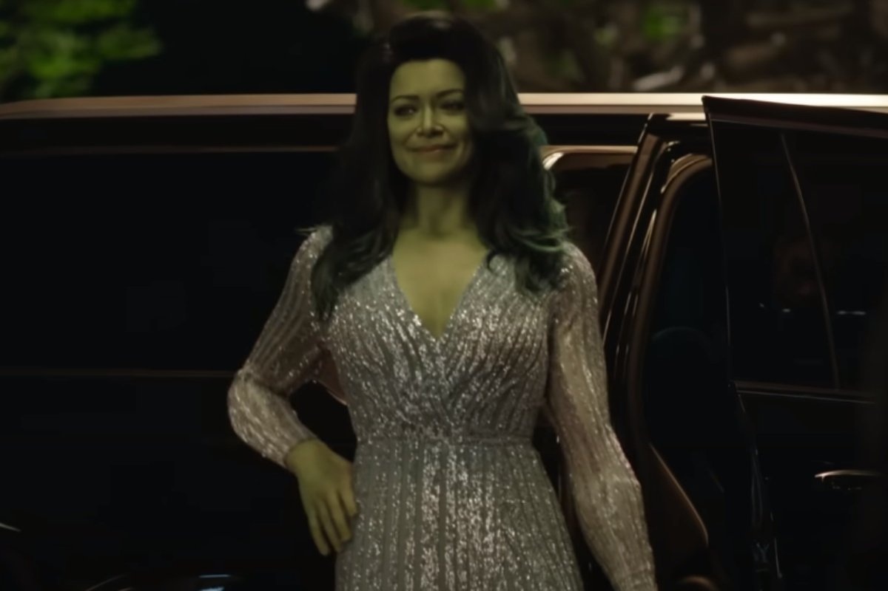

 Tatiana Maslany transformada na advogada com problemas de raiva. Dá pra editar Parágrafo um Paragrafo dois Saiba tudo sobre Jennifer Walters Uma advogada comum. Bem, nem tão comum assim. E não a irrite. Você não irá querer vê-la irritada. Relações com Outros Personagens Relações só to testando Bruce Banner prima aprendiz filha da putagem p testar essa porra Titânia Arqui-Inimiga Capitã Marvel melhor amiga